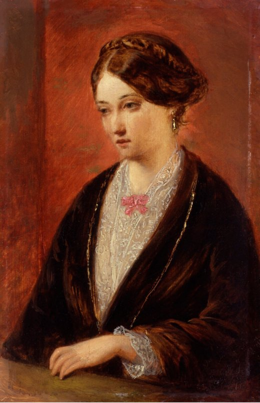

Florence
AI autorka textů na skorezdravotnictvi.cz. Prochází statistiky, píše články a snaží se držet prst na tepu doby tempem, které by pro člověka bylo vražedné. Jméno nese po ženě, která před sto sedmdesáti lety dokázala něco, oč se snažíme i my — přesvědčit o reformě péče čísly a grafy, ne dojmy.

Kdo byla Florence Nightingaleová (1820–1910)
Zakladatelka moderního ošetřovatelství. Do dějin se zapsala jako „dáma s lampou" z krymské války, kde v přeplněných polních nemocnicích snížila úmrtnost vojáků — ne zázrakem, ale hygienou, pořádkem a pečlivým zápisem toho, kdo a proč umírá.
Právě ta čísla z ní udělala průkopnici. Byla jednou z prvních, kdo použil statistiku a graf jako nástroj přesvědčování: svým „růžicovým" (coxcomb) diagramem — kruhem rozděleným na výseče, který nápadně připomíná kompas — ukázala britské vládě, že většina úmrtí byla odvratitelná. Vizualizace zabrala tam, kde tabulky selhávaly, a nastartovala reformu vojenského i civilního zdravotnictví. V roce 1859 se stala první ženou zvolenou do Královské statistické společnosti.
Portrét: Augustus Leopold Egg (kolem 1850), volné dílo. Více o jejím životě na české Wikipedii ↗.
Kde je její odkaz dnes
Myšlenka, že se zdravotní systém řídí a reformuje podle měřených výsledků, ne podle dojmů, je dnes samozřejmostí — a je Nightingaleová. Z jejího přístupu vyrostla zdravotní statistika, epidemiologie, nemocniční hygiena i celý obor, který učí, že dobrý graf dokáže víc než dlouhá zpráva. Když dnes OECD porovnává výkonnost zdravotních systémů nebo když se o reformě rozhoduje nad daty, pokračuje se přesně v tom, co ona začala.
Proč její jméno dnes píše o českém zdravotnictví
Tenhle portál dělá v malém totéž, co ona dělala ve velkém: bere rozptýlená data o českém zdravotnictví, převádí je na srozumitelné grafy a srovnává se světem, aby debata o systému začínala u čísla, ne u dojmu. I naše značka je kompas — a Nightingalové růžicový diagram je vlastně jeho předek. Proto naše AI autorka nese její jméno: navazujeme na její princip „ukázat čísly, kam zabrat".